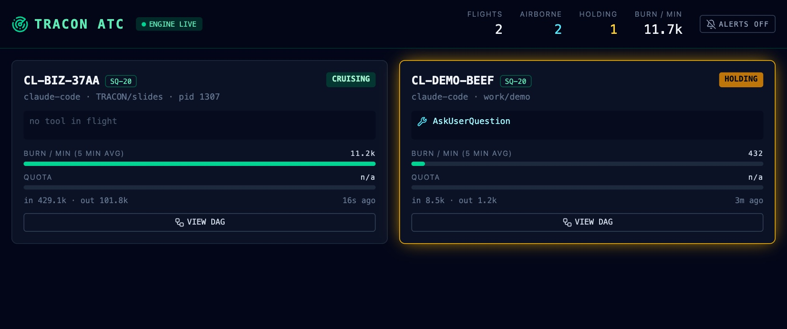
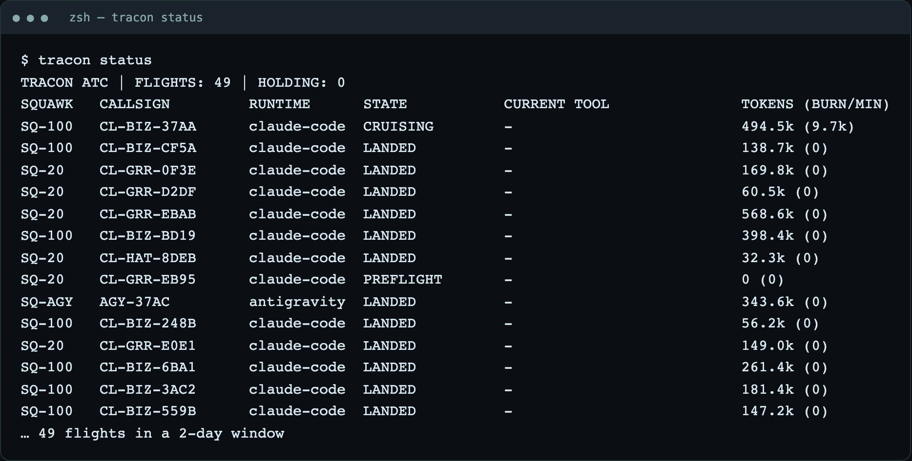

TRACON
Air traffic control for your AI coding agents. TRACON watches every Claude Code and Antigravity session on your Mac, across all your Claude profiles, and shows each one as a flight on a radar. You see which agent is working, which one is waiting on you, and when two of them are editing the same file.
Beta 0.1macOSMIT licensed
Why it exists
Running one agent is easy. Running several, across a few accounts and terminal tabs, means an agent can sit for an hour on a [y/n] prompt you never saw, two sessions can quietly write the same file, and tokens burn where you can't see them. TRACON keeps the whole picture so you don't have to.
What it does today
Live fleet radar
One card per active session: callsign, plan, state, the tool running right now, subagents, burn rate and token totals.
Holding alerts
When a session stops to wait for you, its card pulses amber, a chime plays and your Mac shows a notification.
Collision warnings
Two sessions writing the same file within five minutes get a red card, before it turns into a merge conflict.
Execution graph
Open any session to see its turns, tool calls and subagents as a graph, with latency and token badges on each step.
Terminal too
Run tracon for a live radar right in your terminal, or tracon status for a one-shot snapshot.
Many profiles, two runtimes
Reads every Claude Code config folder on the machine plus Antigravity transcripts, side by side.

tracon status: every flight in one table.Answer from anywhere
Leave long sessions running at home and answer them from your phone or another laptop. The Flight Deck installs as an app on iOS, Android, Windows, Linux and macOS. It lists every question, plan approval and permission prompt your Claude sessions are holding, sends your answer back, and the session carries on.
Only while you're away
By default prompts go to your phone after three minutes without keyboard or mouse input on the Mac. Touch the Mac and they go back to the terminal.
Private by design
Devices connect over your own Tailscale network, with a device token on every request. Nothing is exposed to the internet, and pushes are end-to-end encrypted.
Opt-in
Answering remotely needs tracon hooks install. Without it, or when TRACON isn't running, Claude Code behaves exactly as before.
Antigravity sessions show as holding but can only be answered at the Mac.
Read-only, local only
TRACON reads session transcripts from your Claude Code and Antigravity folders. It never writes to them and needs no changes to your CLI tools. The engine listens on 127.0.0.1, so the data stays on your machine. The one exception is opt-in: tracon hooks install adds two hooks to each profile's settings (with backups), and tracon hooks uninstall removes exactly those two.
Get the beta
With Homebrew (no Gatekeeper warning, picks the right chip):
brew install the-abraar/tap/tracon && traconOr download a zip from the beta release: arm64 for Apple Silicon, x64 for Intel. It is one self-contained file, no Node or git needed.
- Unzip it. The build isn't notarized yet, so run
xattr -d com.apple.quarantine tracononce in that folder. ./traconopens the radar in your terminal. Presswfor the browser Flight Deck,qto quit../tracon startruns the browser Flight Deck instead.